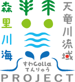

トップ
イベントについて
当日のご案内
お申込み
当日のご案内
10月17日・18日のスケジュール、集合場所、送迎、駐車場、各プログラムの詳細をPDFでご確認いただけます。
当日のご案内をすべて見る（PDF）
↗
ページ別のご案内
01
10月17日・18日｜全体案内
2日間の総合案内・サイトマップ
↗
02
10月17日（土）｜送迎
JR上諏訪駅からの送迎
↗
03
10月17日（土）｜参加者共通
受付・開会式
↗
04
10月17日（土）｜共通プログラム
A 伐倒体験
↗
05
10月17日（土）｜駐車場・移動
いずみ湖からホテルまでの案内
↗
06
10月17日（土）｜参加者共通
夕食・懇談会
↗
07
10月18日（日）｜選択 B-1
カヤック体験／ヒシ刈り
↗
08
10月18日（日）｜選択 B-2
諏訪湖遊覧視察／釜口水門バスツアー
↗
09
10月18日（日）｜昼食
諏訪湖ハイツでの昼食
↗
10
10月18日（日）｜選択 C-1
脱炭素カードゲーム
↗
11
10月18日（日）｜選択 C-2
Water Scope フォーラム
↗
12
10月18日（日）｜参加者共通
閉会式・散会後の送迎
↗
13
10月17日・18日｜駐車場
駐車場案内（両日の駐車区域）
↗
14
A プログラム｜会場図
伐倒体験 会場案内
↗
15
B-1 プログラム｜会場図
カヤック体験・ヒシ刈り 会場案内
↗
16
B-2 プログラム｜会場図
諏訪湖遊覧視察・釜口水門 会場案内
↗
17
C-1 プログラム｜会場図
脱炭素カードゲーム 会場案内
↗
18
C-2 プログラム｜会場図
Water Scope フォーラム 会場案内
↗
イベントについて
当日のご案内
応募申込みは
こちら